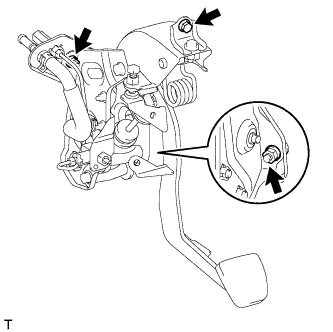

ГЛАВНЫЙ ЦИЛИНДР СЦЕПЛЕНИЯ (для моделей с левосторонним рулевым управлением) > СНЯТИЕ |
| 1. СЛЕЙТЕ ТОРМОЗНУЮ ЖИДКОСТЬ ИЗ ТРУБОПРОВОДА ПРИВОДА СЦЕПЛЕНИЯ |
| 2. ОТСОЕДИНИТЕ ПАТРУБОК БАЧКА ГЛАВНОГО ЦИЛИНДРА СЦЕПЛЕНИЯ |
Отсоедините патрубок бачка главного цилиндра сцепления.
| 3. ОТСОЕДИНИТЕ ТРУБОПРОВОД, ИДУЩИЙ ОТ ГЛАВНОГО ЦИЛИНДРА СЦЕПЛЕНИЯ К ГИБКОМУ ШЛАНГУ |
С помощью разрезной головки отсоедините трубопровод гибкого шланга.
| 4. СНИМИТЕ РАСПРЕДЕЛИТЕЛЬНЫЙ БЛОК СО СТОРОНЫ ВОДИТЕЛЯ В СБОРЕ |
Снимите распределительный блок со стороны водителя (Нажмите здесь).
| 5. СНИМИТЕ ПЕДАЛЬ СЦЕПЛЕНИЯ С ГЛАВНЫМ ЦИЛИНДРОМ СЦЕПЛЕНИЯ |
Отсоедините разъем пускового переключателя муфты.
Для моделей с системой круиз-контроля:
Отсоедините разъем переключателя муфты сцепления.
|  |
Отверните 2 гайки, выверните болт и снимите педаль сцепления с главным цилиндром сцепления.
| 6. СНИМИТЕ ГЛАВНЫЙ ЦИЛИНДР СЦЕПЛЕНИЯ В СБОРЕ |
Отсоедините патрубок бачка главного цилиндра сцепления.
С помощью разрезной головки отсоедините гибкий трубопровод.
Отверните гайку и снимите пусковой переключатель муфты сцепления с опоры педали сцепления.
Снимите фиксатор и штифт и отсоедините вилку штока от педали сцепления.
Выверните 2 болта и снимите главный цилиндр сцепления.